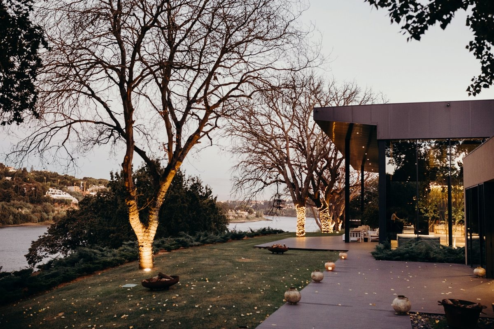

Cerimónia | 14:30
Igreja São José das Taipas
A Igreja localiza-se na baixa do Porto, logo depois do tribunal, junto ao jardim da Cordoaria. Têm o parque de estacionamento Palácio da Justiça mesmo em frente à Igreja.

Copo d'Água
Torre Bella
A Quinta da Torre Bella fica a 14 minutos da Igreja. Têm parque de estacionamento, mas parece-nos a distância ótima para quem preferir ir de Uber.

Dress Code
Fato escuro
Onde ficar?
{% for hotel in hotels %}
{% endfor %}
{{hotel.name}}
{% if hotel.adress %}Morada:
{{hotel.adress}}{% endif %}
{{hotel.adress}}{% endif %}
{% if hotel.email %}Email:
{{hotel.email}}{% endif %}
{{hotel.email}}{% endif %}
{% if hotel.phone %}Telefone:
{{hotel.phone}}{% endif %}
{{hotel.phone}}{% endif %}